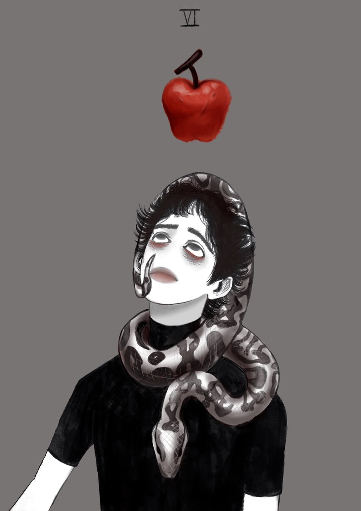

The Lover
인성의 발달 과정에서 맞이하는 불가피한 도전, 사랑의 선택에 대한 문제, 성적인 충동, 욕망
이 딜레마는 단지 두 여자 또는 두 남자 사이에서 선택을 고심하는 문제가 아니다. 그것은 자신의 덕성을 반영하는 것이기도 하다.
왜냐하면 우리의 선택은 자신의 미래를 거울처럼 되비춰주기 때문이다. 파리스는 젊음, 그리고 성적인 충동 때문에 성숙한 통찰로 인한 진정한 선택을 할 수 없었다.
그의 선택은 욕망에 의한 것이며, 여기서 자유 의지와 본능적 충동이 대립하게 된다.
사랑을 선택한 결과는 파장이 매우 크다. 왜냐하면 그것은 삶의 모든 차원에 영향을 미치기 때문이다.
파리스의 충동적 선택은 결과적으로 트로이 전쟁이라는 대 분란을 가져왔다.
그에게 미의 경쟁을 심판하는 일은 억지로 떠맡겨졌었다. 이와 같이 삶도, 미처 준비가 안 된 우리에게 그런 도전들을 들이민다.
어떤 면에서 그의 실수는 필연적이었다고 볼 수 있다.
이성에 대한 욕망을 통해 우리는 자신의 선택으로부터 일어나는 혼란과 갈등을 겪으며 개인적 가치와 자기 인식의 발전을 이루게 된다.
파리스는 끝없는 욕망에 지배된 채 모든 선택은 결과를 낳고 그것은 궁극적으로 자신의 책임이라는 사실을 인식하지 못하는 우리의 한 측면을 상징한다.